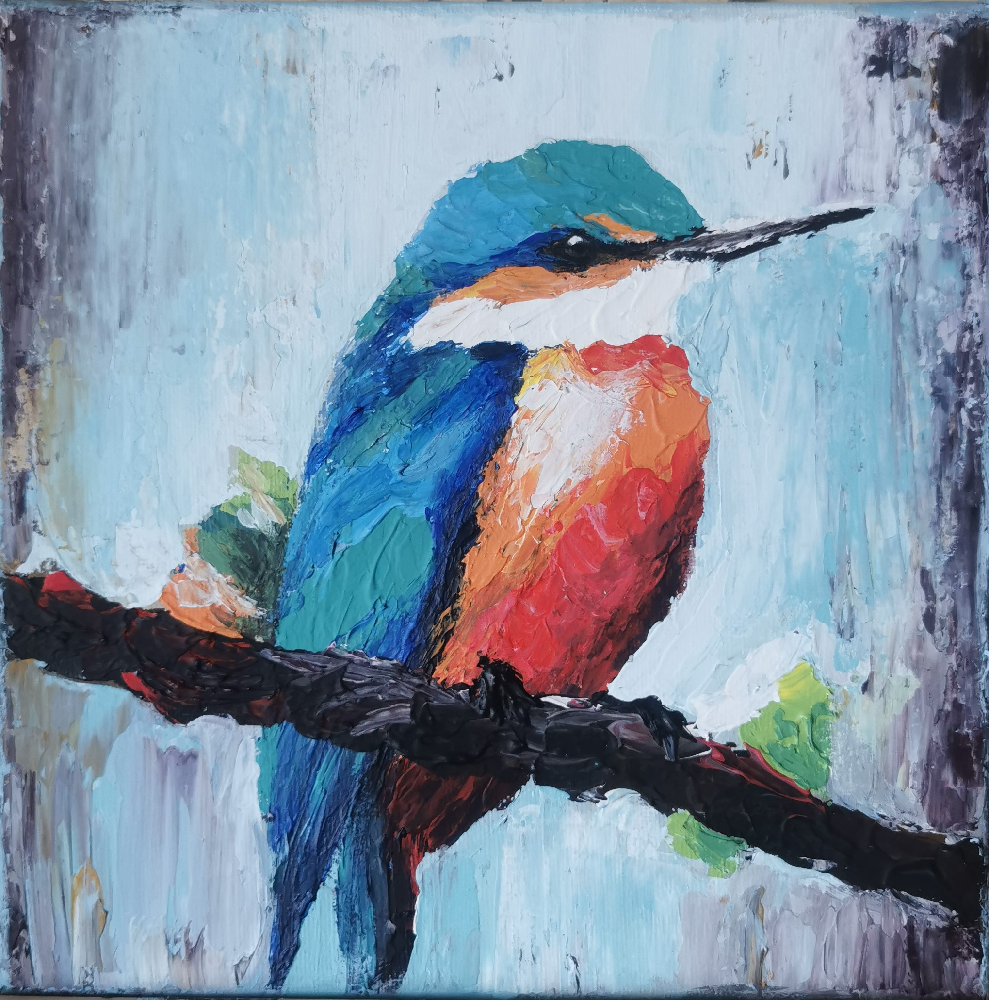
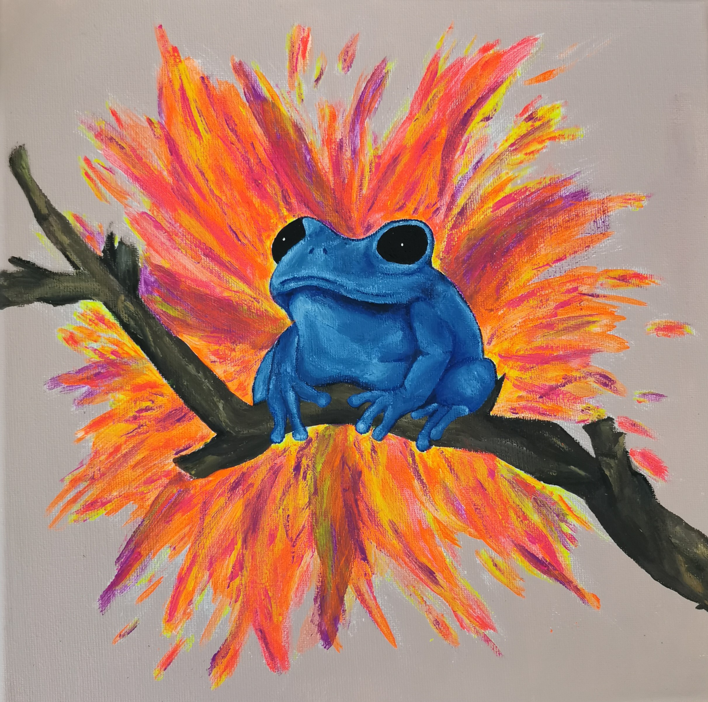
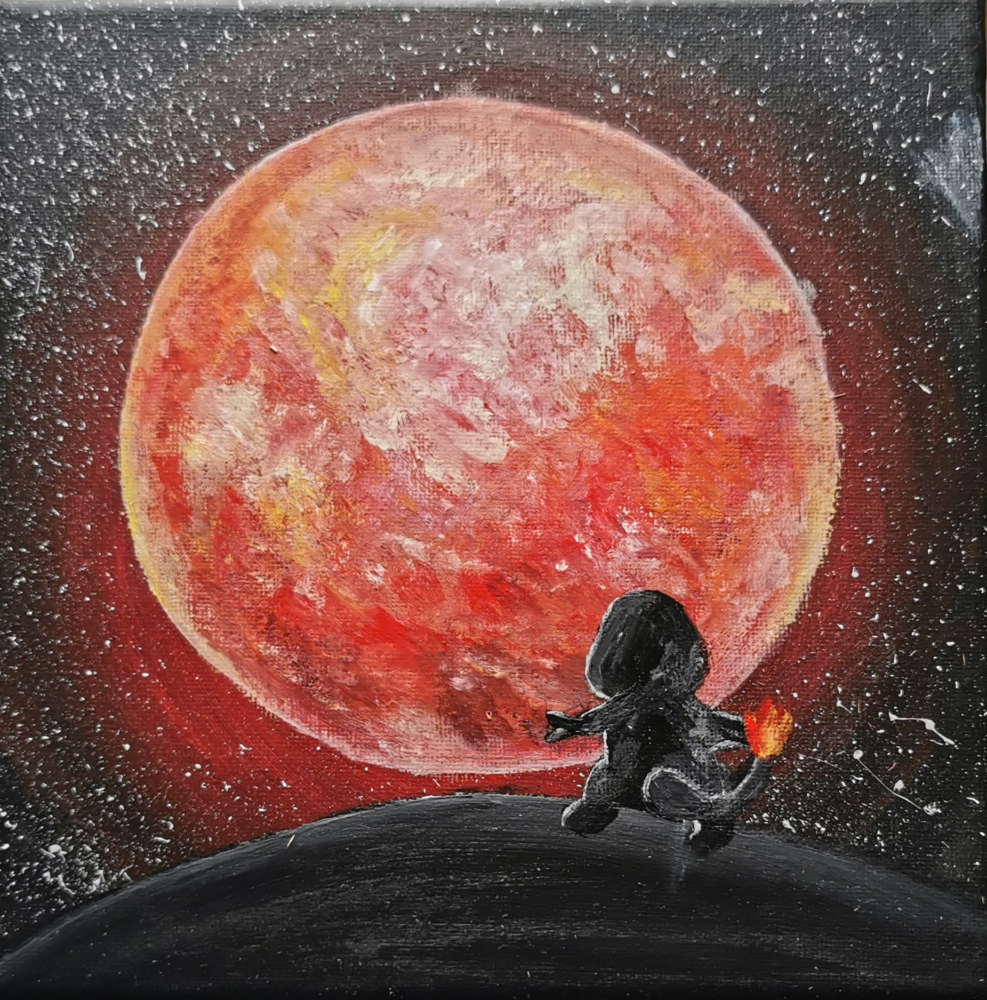

Klick um zu sehen wie ich fertiggestellt werde
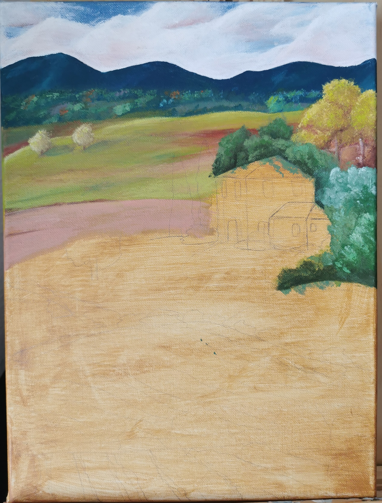
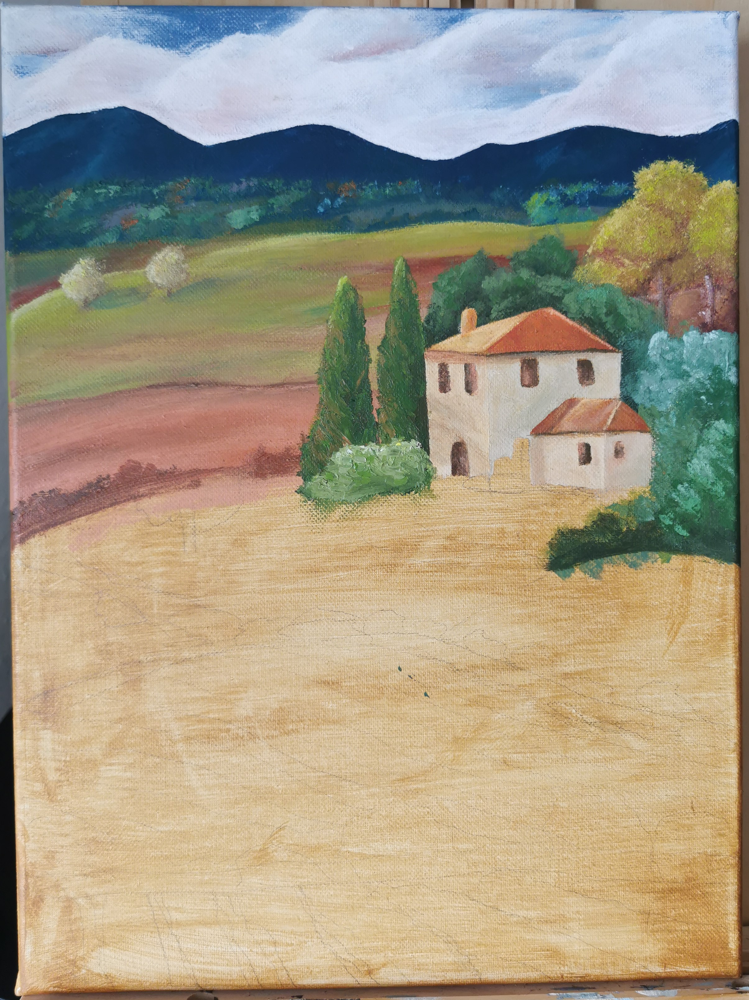
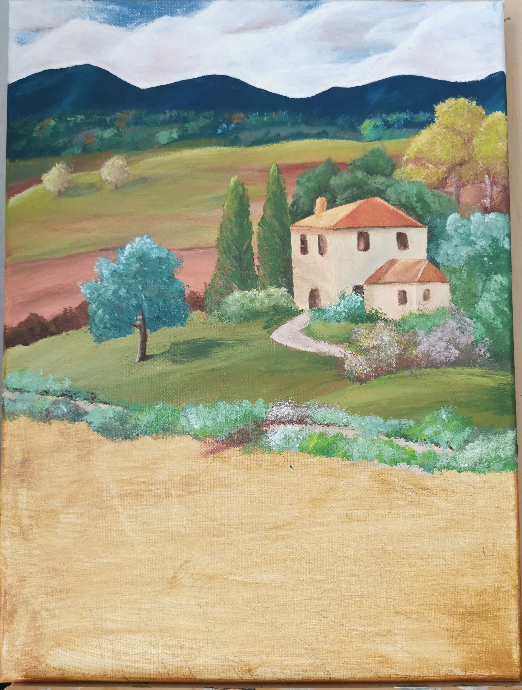
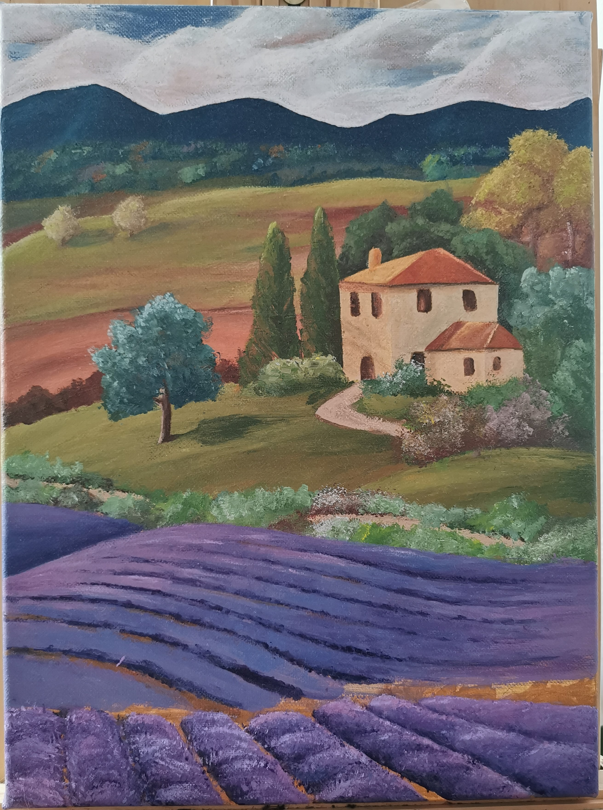
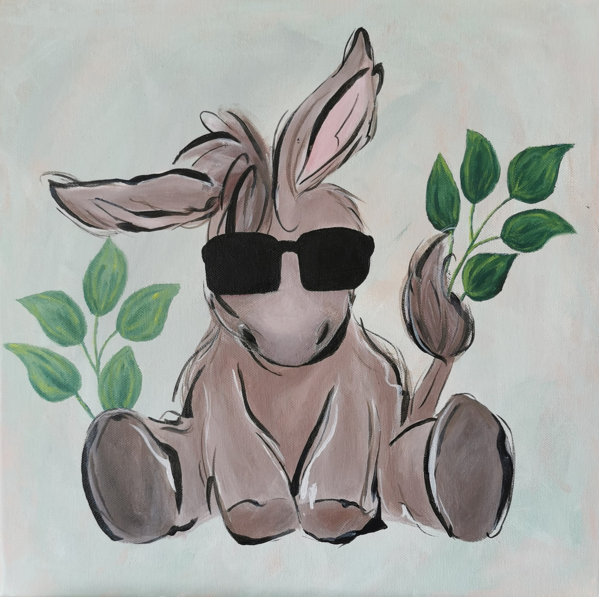
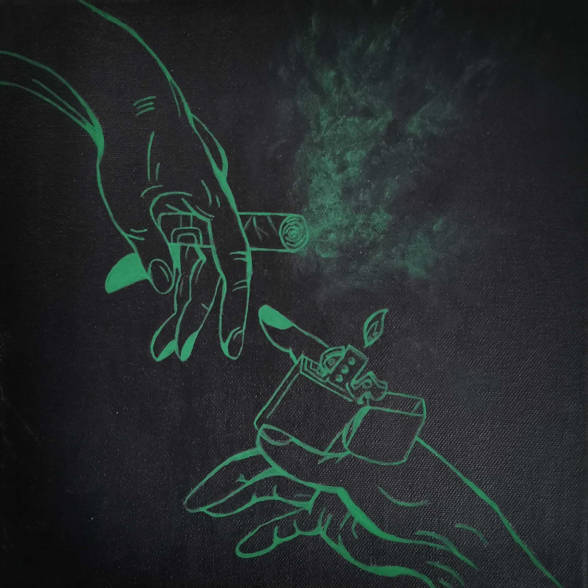
Mein Studium im Bereich Technik und Management hat meine Leidenschaft für das Programmieren entfacht. Neben meiner Begeisterung für Technik finde ich großen Gefallen daran, zu malen und Dinge zu gestalten. Dieser kreative Ausgleich hilft mir, stets neue Perspektiven in meine Arbeit einzubringen und innovativ zu bleiben. Diese Website ist ein Spiegelbild meiner beiden Welten – sie zeigt sowohl meine technischen Fähigkeiten als auch meine künstlerische Seite. In meiner Freizeit schöpfe ich darüber hinaus neue Energie beim Yoga, durch Meditation oder beim Aufenthalt in der Natur.



Klick um zu sehen wie ich fertiggestellt werde






Auch neben herkömmlichen Bildern, liebe ich es kreativ zu werden. Bei den folgenden Gegenständen gibt es auch hier auf der Seite etwas zu entdecken.

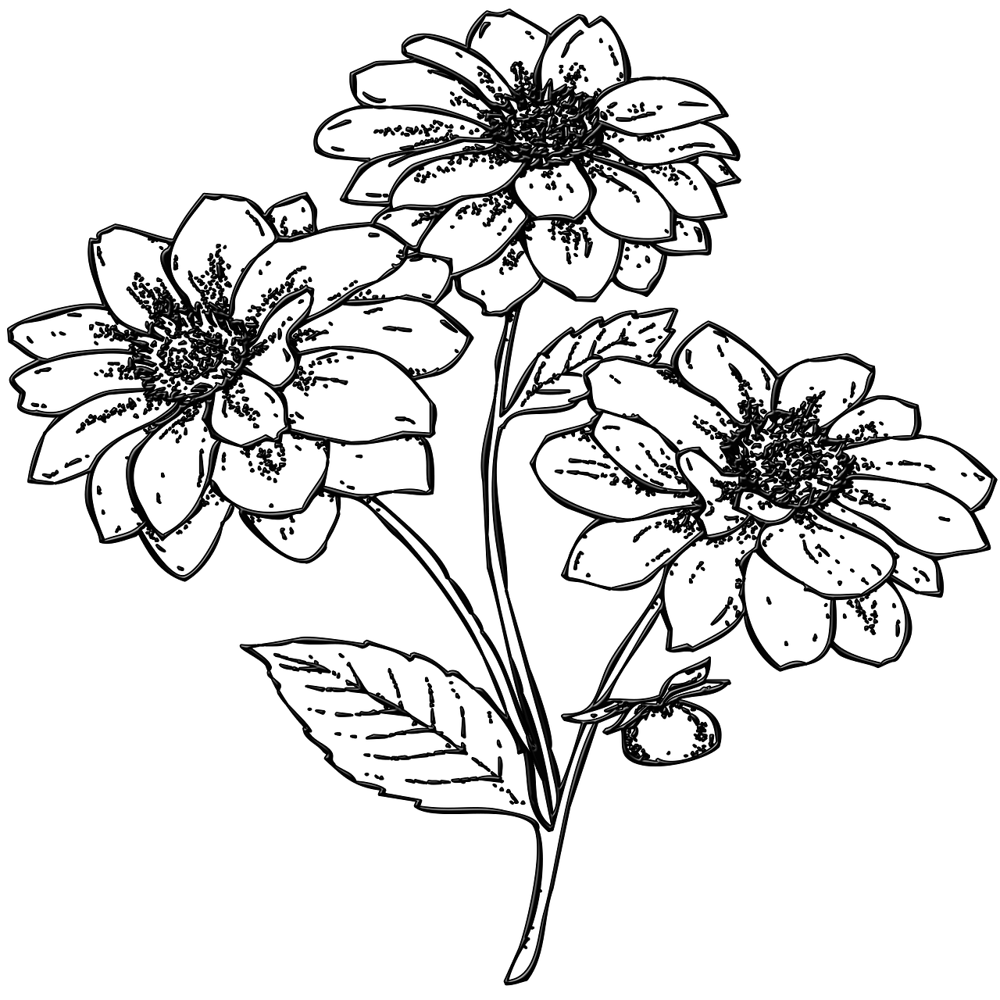
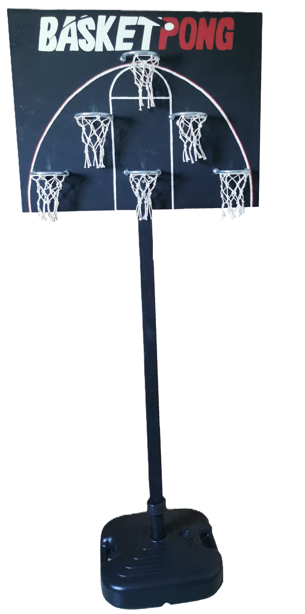